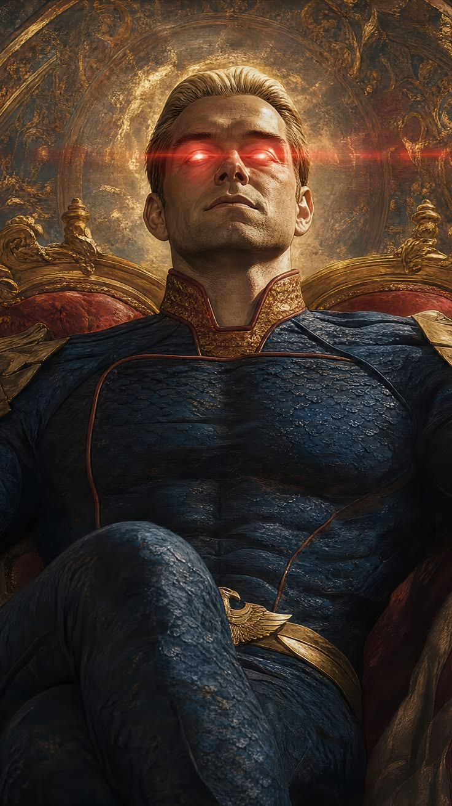

Antony Starr is a New Zealand actor best known worldwide for his role as Homelander in the television series The Boys. His performance as the powerful and terrifying leader of The Seven became one of the most recognizable roles of his career.
Before The Boys, Starr was also widely known for playing Lucas Hood in the action series Banshee. His ability to portray complex and intense characters has made him one of the most memorable actors in modern television.
Born: October 25, 1975
Birthplace: Wellington, New Zealand
Nationality: New Zealander
Famous roles: Homelander, Lucas Hood
